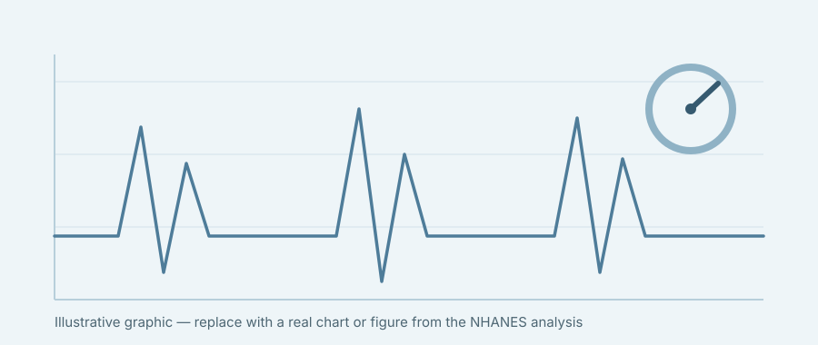

Hi, I am
A Health Science researcher who aspires to become a medical malpractice attorney to improve health outcomes.
About
"I'm a health science researcher who aspires to become a medical malpractice attorney to improve health outcomes."
I'm Connie Huang, a sophomore in the Honors Program at the University of Florida studying Health Science, with minors in Public Health and Philosophy. My coursework and research sit at the intersection of clinical medicine, health policy, and law — I'm drawn to the systems that decide who gets access to good care, and to the moments where those systems fail patients.
Outside the lab, I hold a leadership role with the Society of Asian Scientists and Engineers (SASE) at UF, where I help build community among students pursuing STEM. My long-term goal is to practice medical malpractice law, using both a clinical and legal lens to push for better, safer health outcomes.
Research
My current project examines a common but under-treated comorbidity in cancer survivors, using national health survey data.

Hypertension is a common comorbidity among cancer survivors and a leading modifiable risk factor for cardiovascular disease. This study examines differences in untreated and uncontrolled hypertension among adults with and without cancer, and across major cancer types. Cancer survivors, especially those with breast and colorectal cancer, face missed opportunities for hypertension treatment and control. Integrating systematic blood pressure screening, treatment optimization, and survivorship-focused cardiovascular care pathways may reduce preventable cardiovascular morbidity and improve long-term survival among cancer survivors.
In this project, I collect and analyze data from the NHANES (National Health and Nutrition Examination Survey) database using R, supporting the study's statistical analysis of hypertension treatment and control patterns across cancer survivor populations.
Coursework
CV / Resume
I'm always glad to connect about research, coursework, or SASE.